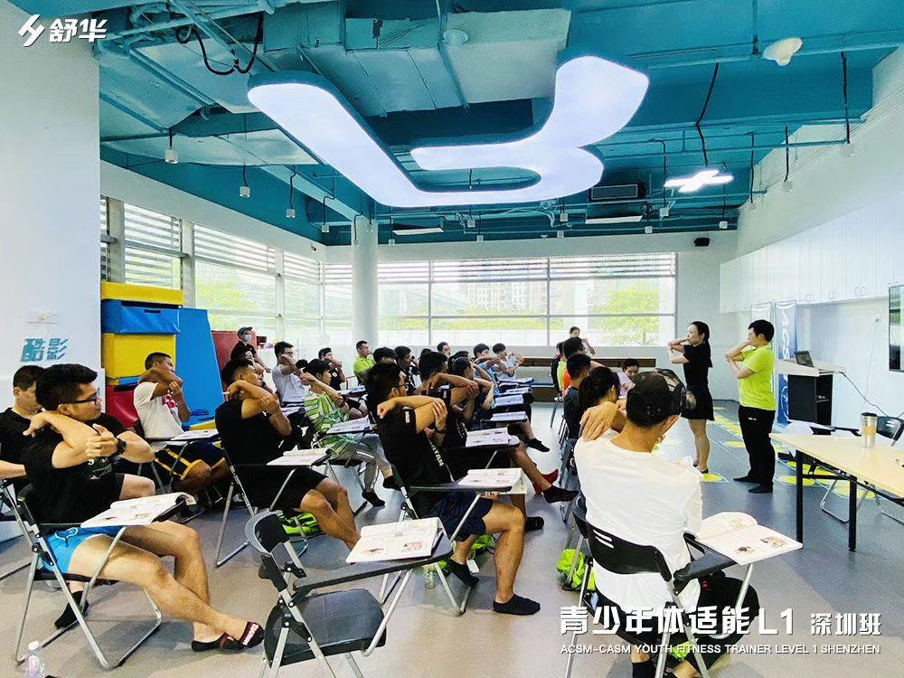

The Scientist-Practitioner Model
We solve the "Engagement vs. Health" paradox.
Traditional health education fails due to a lack of engagement. Viral content fails due to a lack of rigor. SISFIT operates at the intersection, using large-scale data to drive evidence-based outcomes.